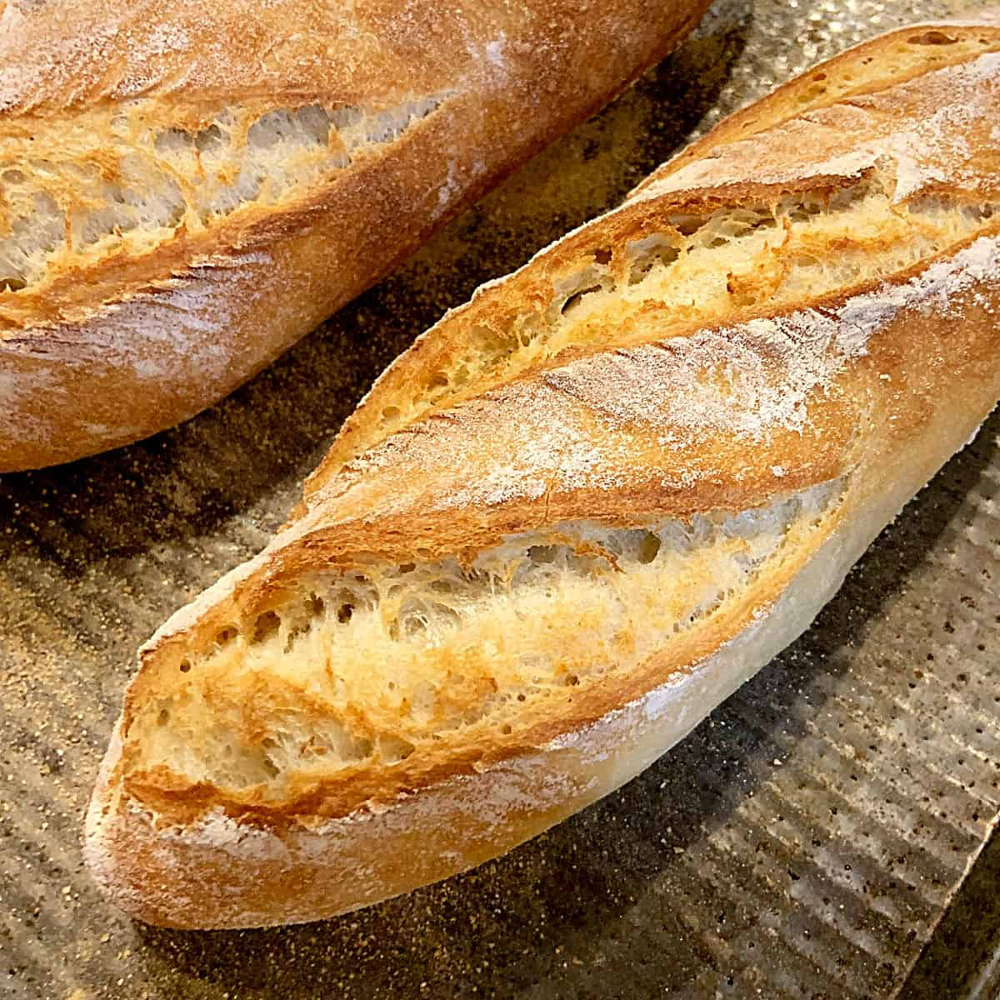

French Bread

Dutch Oven French Bread
This is my favorite bread recipe by far. It's easy, relatively quick, and delicious.
The Dutch oven gives the bread a really nice crust all over, while still cooking it evenly inside for a nice, soft bread.
Ingredients
- 400 grams bread flower
- 300 grams warm water
- 9 grams active dry yeast
- 8 grams salt
- 4 grams honey
Steps
- Combine yeast, sugar, and warm water in a bowl.
- Let the yeast get foamy, which should take about 5 minutes.
- Mix until the dough begins to come together, then add the salt.
- Mix until dough fully forms and is relatively smooth.
- Cover bowl with a towel and let rise for one hour.
- Once dough is risen, tip onto a floured surface. DO NOT PUNCH DOWN.
- Pull each corner into the center until the dough feels tight when pulled.
- Flip over so the seam side is down and form into a round loaf.
- Let rise (seam-side down) for 30 minutes.
- Place Dutch oven into the oven and preheat to 460°F.
- Once oven is preheated, place bread on a piece of parchment paper and carefully lower into the Dutch oven.
- Bake for 30 minutes.
- Remove lid and bake for another 10 - 15 minutes until top of loaf is golden brown.